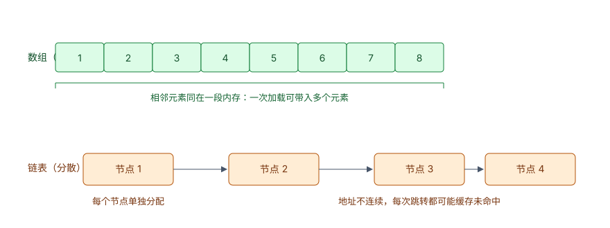
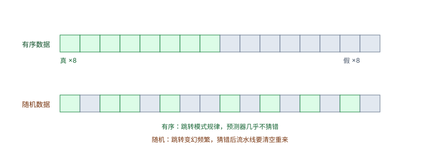

数据结构性能分析：大 O 之外的真相
两个算法同为 O(n log n)，实测却能差出数倍；一个“O(1)”的操作偶尔会突然变慢。大 O 描述的是增长趋势，而不是你这台机器上的真实耗时。这一章补上那些被抽象丢掉的东西。
大 O 丢掉了什么
大 O 描述的是当 n 增长时耗时的增长趋势，它把所有常数因子都丢掉了。丢掉的包括：每次操作的常数、硬件行为（缓存、分支、内存分配），以及操作是“稳定快”还是“偶尔很慢”。
所以一个看似矛盾的结论是成立的：当 n 很小时，简单的 O(n) 线性扫描可能快过一个“O(1)”的哈希查找。因为哈希查找的 O(1) 省略了“算哈希、取模、处理冲突”这些固定开销；而扫描 5 个元素的固定开销几乎为零。这不是矛盾，而是大 O 只讲了趋势。
# 两种一样“正确”的选择，代价结构完全不同（教学示意）：
# A：每次算一次哈希再查表——固定开销大，但 n 增大时几乎不变。
# B：线性扫描一个小列表——固定开销极小，但 n 增大时线性变慢。
# 交叉点在哪里取决于 n 与两者的常数，只能实测，不能拍脑袋。因此第一步选择可以用大 O 过滤掉数量级上明显不合适的方案，但“具体哪个更快”要靠实测。接下来的几节，分别看几个常被忽略、却常常主导实测结果的因素。
摊还与延迟抖动
动态数组（CPython 的 list、Java 的 ArrayList）尾部追加被称为“O(1) 摊还”：容量满了会把元素搬到一块更大的连续内存，这是一次 O(n) 的重分配；但因为容量成倍增长，平均到每次追加上仍是常数。
摊还是对一长串操作的总体代价求平均，不是对单次操作的承诺。差别在延迟敏感系统里很实在：一个偶尔发生的重分配会带来一次明显的卡顿，哪怕平均时间很好看。
所以要分清三个量，它们经常被混用：
- 摊还上界：一长串操作总代价除以操作数。
- 最坏单次：某一次操作可能达到的峰值。
- 实测平均：在特定数据与硬件上真正量到的结果。
工程上应对延迟抖动的手段也很直接：需要请求内可预测时，改用预分配容量、分块结构（如 deque 的分段缓冲）或对象池，把“偶发的 O(n)”挪出关键路径。
缓存局部性
CPU 不会直接以单个字节为单位访问内存。它从缓存拿数据，而缓存按固定大小的块（缓存行，常见为 64 字节）整块加载。如果你的访问是顺序的，那么下一个元素往往已经在缓存里了，这就是良好的缓存局部性。
缓存有多层，越靠近 CPU 越小、越快。数量级示意（教学示意，具体数值随硬件而变）：寄存器最快，L1/L2/L3 依次变慢、容量依次变大，而主存又比缓存慢一个数量级。对随机跳转的访问，数据很可能不在缓存，每一次都是一次较慢的内存读。

这解释了一个常见的实务观察：同为 O(n log n) 的快速排序与归并排序，实测往往是快排更快。快排就地划分、访问集中在同一段数组；归并排序需要额外的辅助数组，合并时在两组连续内存间来回读写，局部性差一些。注意这是“常常”而不是“必然”，具体结果与实现、数据分布、机器都有关。
实用习惯：能用连续内存的数组，就别用一堆单分配节点拼链表。多数情况下，数组就是最快的“链表”——除非你确实需要链表的插入/删除特性。
分支预测
现代 CPU 以流水线方式执行：在判断结果出来之前，它就已经猜了一个方向并继续往下取指。猜中就顺畅推进；猜错则要清空流水线重来，代价是一小段固定周期。因此代码里的条件分支是否有规律，会影响真实耗时。

x < 128，在有序数据上模式极其规律，在随机数据上则反复跳变。预测器对前者几乎不猜错，对后者大约半数猜错。这就是那个广为人知的提问“为什么排序后的数组求和反而更快”背后的原因：不是加法变快了，而是分支变得可预测了。但要小心结论的适用范围：排序本身也是 O(n log n) 的开销。只有当你会多次遍历同一份数据时，排序带来的分支规律才可能净赚。
数一数跳变了多少次
对同一判断 x < T，比较有序与乱序数据上的“跳变次数”（相邻两次判断结果不同的次数）。这只是预测难度的模型示意，不是 CPU 真实数据。
内存分配与对象池
每次动态分配一个节点（如 malloc / CPython 的对象创建），背后都有一整套工作：在内存分配器里找到合适的块、可能向内核申请新页、维护元数据、必要时做碎片整理。这些固定开销与“存的数据有多大”无关，却会在小对象很多时叠加起来。
这也是链表的一个隐形代价：每个节点都单独分配，于是不仅多了指针，还多了每次分配的开销与不连续的内存布局。前面两节的缓存与分配开销会一起作用。
常见的应对是内存池 / 对象池：预先把一大块内存切成固定大小的块（或预先建好一批对象），使用时从池中取、用完放回，从而避免频繁与内存分配器/内核交互。思路可以用几行表示：
class NodePool:
def __init__(self, capacity):
self.free = [Node(0) for _ in range(capacity)]
def acquire(self, value):
node = self.free.pop() # 从池里取一个现成的
node.value, node.next = value, None
return node
def release(self, node):
self.free.append(node) # 用完放回，不归还给分配器要分清两件事：池化减少的是分配频率与碎片，而不是把 O(1) 变成 O(1)。它改变的是常数因子与延迟分布，因此“到底快多少”仍需在你自己的场景里量。
怎么做基准测试
上面每一步的结论都无法靠“感觉”确定，只能靠测量。下面这段代码可以自己跑（examples/benchmarking.py 里有更完整的版本），它对比 CPython 的 list 与手写链表在遍历、随机访问上的差异。
import timeit
from benchmarking import LinkedList
N = 10_000
arr = list(range(N))
ll = LinkedList(range(N)) # 预先构造好，不把构造时间算进去
rep = 200
space = " "
traverse_arr = timeit.timeit(lambda: sum(arr), number=rep)
traverse_ll = timeit.timeit(ll.traverse_sum, number=rep)
print("遍历：数组", traverse_arr, "链表", traverse_ll)写基准时有几个容易踩的坑：
- 先把冷启动/预热与构造时间排除在外：只测你想测的那一段。
- 多跑几次看波动：取中位数比取一次结果可靠；同时留意系统负载。
- 不要相信跨机器、跨版本的固定数字：本文不给“某型号芯片下的实测表”，因为你机器上的结果可能完全不同。
- 用数据而不是直觉下结论：先 profile 找到真正的瓶颈，再针对它优化。
一个诚实的原则：结论应该写清楚“在什么条件下成立”。看到没有环境说明的性能断言时，先保持怀疑。
什么时候自己实现
理解了这么多底层差异，并不意味着应该到处手写结构。标准库（CPython 的 list/dict/set）是用 C 写的，经过长期优化与海量测试，在绝大多数场景下就是你的默认选择。
真正适合手写的情况通常就几类：
- 特殊访问模式：需要 LRU、优先队列变体等标准库没有直接提供的语义。
- 内存/实时约束：嵌入式或延迟敏感场景，不能接受 GC 顶起或偶发重分配。
- 并发需求：需要无锁队列、读写分离哈希表等标准库不提供的结构。
- 学习目的：为了搞懂原理而实现，生产环境仍用标准库。
要时刻提醒自己：手写数据结构的真正成本不在“写”，而在“维护”。一个自己实现的结构需要自己负责边界、并发、内存与回归测试。先问“标准库够不够”，再问“实测真的快很多吗”，两个答案都为“是”时再动手。
带走三个判断准则
- 大 O 只描述增长趋势；常数因子、数据规模、缓存与分支都会影响实测，小规模时尤其明显。
- 摊还不等于单次稳定：一个“O(1) 摊还”的操作偶尔会变慢，延迟敏感场景要特别小心。
- 一切性能结论以你自己机器上的基准为准；没有环境说明的性能断言都不可信。
继续学习与校验资料
- CPU cache — 缓存层次与缓存行
- Branch predictor — 分支预测与流水线/刷新代价
- timeit — Python 标准库基准工具
- 运行参考：
examples/benchmarking.py；测试：tests/test_benchmarking.py